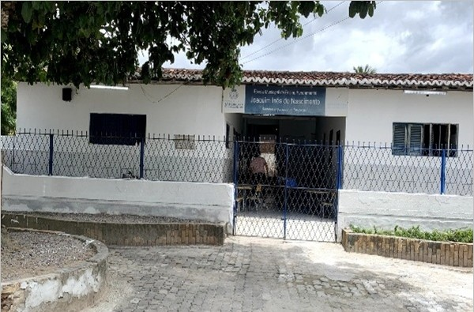

Escola Municipal Joaquim Inês do Nascimento
Endereço: R. Principal, 1919 - Pajucara, São Gonçalo do Amarante - RN, 59290-000
Contato
Telefone: (84) 99985-9154
Email: escolamunicipaljoaoquimenes@gmail.com
Instagram: @escola.joaquim.ines
Notícias
- Reunião de pais: 12/03 às 18h
- Feira de Ciências em abril
Laboratório de Informática
Número de computadores: 5
Horário de funcionamento:
Velocidade da conexão com a internet:
Finalidade do laboratório: